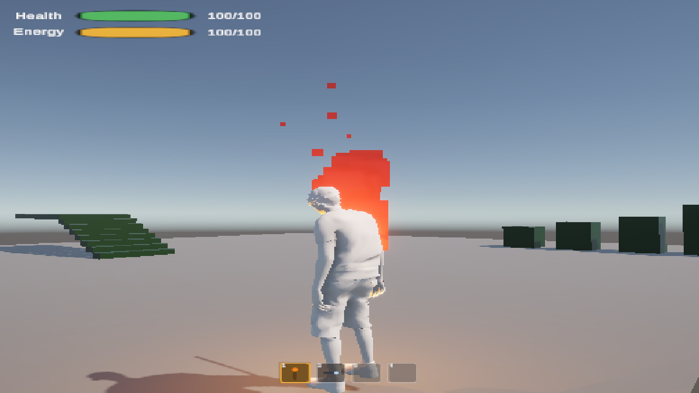
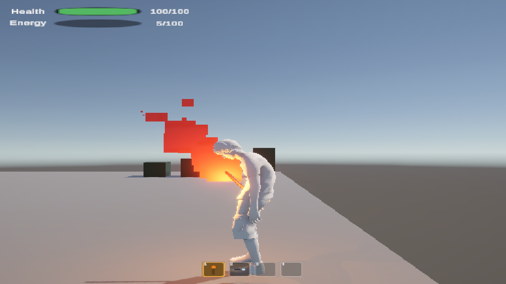

Map
The prefab root is the gameplay object. The mesh only poses. Root motion stays off, so a clip never teleports the capsule.
Solid arrows are the play loop. Vitals sit beside movement and refuse sprint or jump when energy is low. The hold layer and the searchlight IK both write the left arm, and only one of them is active.
What you see
SampleScene in play. The bars live on the player. The hotbar is four slots. Slot 1 starts selected.


The middle energy row is the low state: under 20 the fill turns red, sprint and jump lock, and the idle slumps. The crosshair is drawn here so you can see where it sits. In play it appears only on slot 2. The number on a bar is the current pool, rounded up.
One frame
PlayerAvatar runs at execution order −50 so the humanoid is bound before the controller caches bones. PlayerVitals runs at 50, after movement has decided whether this frame is a sprint.
Player
Player.prefab
├─ CharacterController height 1.97 · radius 0.15 · step 0.30 · center y −0.29
├─ PlayerInput Unity Events into the methods below
├─ PlayerController walk 5 · sprint 8 · jump height 2.5 · gravity −25 on the prefab
├─ PlayerVitals 100 health · 100 energy
├─ PlayerAvatar binds ModelSlot to MaleAnimator
├─ PlayerInventory 4 slots, torch then searchlight
├─ HeldItemVisual torch and light on LeftHand, pistol on RightHand
├─ CameraTarget orbit point, not the capsule center
├─ ModelSlot
│ └─ humanoid Animator + MaleAnimator · StairFootIk added in play
└─ InventoryCanvas overlay, sort order 100
├─ Vitals Health row, Energy row, VitalsHud
├─ Hotbar 4 slots + InventoryHotbarView
├─ Crosshair on only for the searchlight
└─ DeathPanel hidden until health hits 0
PlayerAvatar
Tools/Player/Swap Model drops a humanoid under ModelSlot, assigns MaleAnimator, turns root motion off, and scales the mesh toward 96% of the capsule height.
StairFootIk
Lives on the Animator, because OnAnimatorIK only runs there. It plants stair soles on the tread under each foot.
−25 wins
The script field defaults to −40. The prefab stores −25, and that value is what play uses until you change the prefab.
Hands on keys
Actions live in Assets/Input/PlayerInputActions.inputactions, map Player. The prefab sends Unity Events. It does not use a generated C# wrapper.
Body
pistolYawFromBehind, then the body turnsHotbar
Move direction is rebuilt from the camera’s flattened forward and right. The body turns toward that direction. With the pistol pose in, the mouse owns facing, walk uses the body’s forward and right, and the stick does not steer. Stairs keep the free orbit and still turn toward the move. Scroll uses unscaled time, so the cooldown does not depend on a slowed game.
Vitals
Two pools, both 0–100. The HUD fills from Changed. Death fills from Died.
Health
Energy
The latch is there so a bar that ticks back over 20 does not immediately start sprinting again while Shift is still held. Jump, climb, and jump-down all refuse while the bar is low, and each successful Space spends 20–25 first.
Nothing in the forest deals damage yet. ApplyDamage is the door. The context menus Debug Kill and Debug Drain Energy on PlayerVitals exercise death and the tired pose in play mode.
Tired pose
When energy is low, Tired eases from 0 to 1 over about 0.55 s. The base blend tree is a plane: Speed across, Tired up. Walk and run use the same clip on both rows. Only idle changes shape.
Speed itself eases too: about 0.22 s into a move, about 0.48 s back to idle, so the Mixamo poses have time to mix. Stopping from a sprint passes through the walk blend on the way.
Torch and light
Torch and searchlight are born under LeftHand and their colliders are turned off. The pistol is born under RightHand. Changing slots eases the prop over about 0.32 s, so it does not pop.
Slot 1 · torch
The layer weight is the torch blend. Legs stay on the base layer. The idle frame is parked while the layer is still invisible, then crossfaded in.
Slot 2 · searchlight
The arm stays in front of the chest. A look straight up or behind the body does not fold the shoulder back. The lamp, not the whole arm, takes the steep angle. The crosshair marks that ray.
Slot 3 · pistol
Selecting the pistol sets Pistol and the base layer crossfades into those two clips. The Hold layer stays at 0. The camera swing in this pose is pistolYawFromBehind. Past that, the mouse turns the body. Jump, climb, and stairs still use their own clips. Stairs keep the free orbit. There is no arm IK.
Space
Grounded, and not already climbing or dropping. Low energy stops the whole chain before any of it spends energy. Otherwise Space spends 20–25, then picks the first match.
Stairs are rejected as climb targets. A wide top is a mantle. A thin obstacle looks for ground on the far side. Jump-down rides a short arc and does not hold the lip. SampleScene’s cube is the climb. Its untagged Ledge is the drop. Its tagged Stairs object is neither.
Stairs
A stair is a collider whose transform, or a parent, has the tag Stairs. Uphill is that object’s forward, flattened. Contact lasts 0.2 s after the last hit, so a gap between treads does not kick the character back to flat-ground speed.
One tread per plant
Horizontal speed is 2 × tread / clip length for a two-plant clip. Descend has one plant that reaches the ground, so that cycle is treated as one step and plays faster than its authored length.
Stick to the slope
Vertical speed is horizontal speed times riser / tread. The capsule rides the steps. Uphill uses the 0.3 m step offset to clear the 0.2 m risers, and fall speed is capped.
Script owns the clock
Once the stair state is fully in, animator speed goes to 0 and normalized time follows distance along the stair. The state machine still chooses which clip.
Stairs, aim its forward uphill, and keep step renderers about 0.18–0.8 m deep so spacing can be measured. SampleScene is eight steps of 0.35 × 0.20, then a landing. The tag list is in ProjectSettings/TagManager.asset.Animator
Assets/AnimatorControllers/MaleAnimator.controller. Two layers. The base layer’s IK pass is on.
| Parameter | Who writes it | What it means |
|---|---|---|
Speed | PlayerController | 0 idle, 0.5 walk, 1 sprint, eased |
Tired | PlayerController | 0 fresh, 1 when energy is low, eased over 0.55 s |
IsSprinting | PlayerController | Shift, moving, and the latch is clear |
Jump Climb JumpDown | triggers | One-shot entries |
OnStairs | PlayerController | Stair contact timer still running |
StairDirection | PlayerController | 1 up, −1 down, 0 across. Threshold 0.35 |
HoldRate | HeldItemVisual | 0 idle, 1 walk, 1.35 sprint, on the Hold layer only |
Pistol | HeldItemVisual | True while the pistol slot is selected. Base layer plays Pistol Locomotion |
PistolRate | PlayerController | 1 at idle and walk, up to sprint/walk while sprinting, so the pistol walk clip keeps up |
State names the scripts look up by string: Walk Up Stairs, Run Up Stairs, Descend Stairs, Climb Over, Blend Tree, Torch Hold, Pistol Locomotion. Clips sit in Assets/Models/Characters/LowPolyMale/Animations/ and retarget onto the humanoid. Pistol Locomotion is a 1D blend on Speed: 0 is Remy@Pistol Idle, 0.5 is Remy@Pistol Walk.
Camera
ThirdPersonCamera on Assets/Prefabs/Main Camera.prefab finds CameraTarget under the player, and reads the Look action itself. Horizontal look is free until it is 135° off a straight rear view. Past that, the extra yaw turns the character and the framing stays put. While the pistol pose is in, and the player is not on stairs or climbing, that window eases to pistolYawFromBehind on ThirdPersonCamera. The script default is 28°. Inside it, the mouse orbits and the body stays put. Past it, mouse yaw turns the body, and movement does not. The shoulder shift follows the camera orbit, so the character stays in frame while that view swings. The look point takes the full shift so a centered pistol view matches the facing. Once that pose is in, the camera sticks to the orbit instead of trailing the turn. Stairs keep the free window and their own facing. Climb and jump-down do not take the extra turn: the camera yaw is clamped and the extra mouse is dropped. The script runs at execution order 100, after movement and the climb warp. CameraFollow.cs is an older damper. No scene uses it. Cursor locks on start and frees on death.
World
SampleScene
Ground, a climb cube, tagged stairs with a landing, and an untagged ledge. This is the scene the traversal numbers were tuned against.
Demo_01
250 m terrain plus the Pure Poly scatter. Built by editor menus, then saved. There is no runtime spawner.
Demo_01_Night
Same forest. The torch prefab can be parented for the night pass. In play, the hotbar torch is the one in the hand.
Those menus live under Assets/Editor/ and are not in a build. Rendering is URP, with PC_RPAsset and Mobile_RPAsset in Assets/Settings/.
Where to change things
| You want to… | Open |
|---|---|
| Walk, sprint, jump, climb reach, tired ease | PlayerController on the Player prefab. Gravity there is −25. |
| Drain, regen, jump cost, the 20% line | PlayerVitals on the same prefab. Then Tools/Setup Player Vitals if you rebuild the HUD. |
| Which clip plays | MaleAnimator.controller. Keep the state names listed above. |
| A new tired walk or run | The top row of the 2D blend tree. Today those corners reuse the fresh clips. |
| Torch grip or searchlight aim | HeldItemVisual and SearchlightAim. Rebuild the hotbar with Tools/Setup Inventory Hotbar. |
| Another body | Tools/Player/Swap Model. The FBX needs a Humanoid avatar. |
| A new stair | Parent, tag Stairs, forward uphill. |
| Foot-to-tread timing | BakeStairClip and PhaseForFeetOnTreads. PlantStairFoot only sets height. |
| Camera distance | ThirdPersonCamera on the Main Camera prefab. |
| A new button | Add the action, then add a Unity Event on the Player’s PlayerInput. |
Working together
Save the scene
Inspector and Scene-view edits vanish when Unity closes if the scene was not saved.
One editor per scene
Two people in SampleScene.unity at once produce a bad YAML merge. Prefer prefab edits.
Commit the .meta
A missing meta breaks animator and prefab references. Leave Library/, Logs/, Temp/, and UserSettings/ untracked.